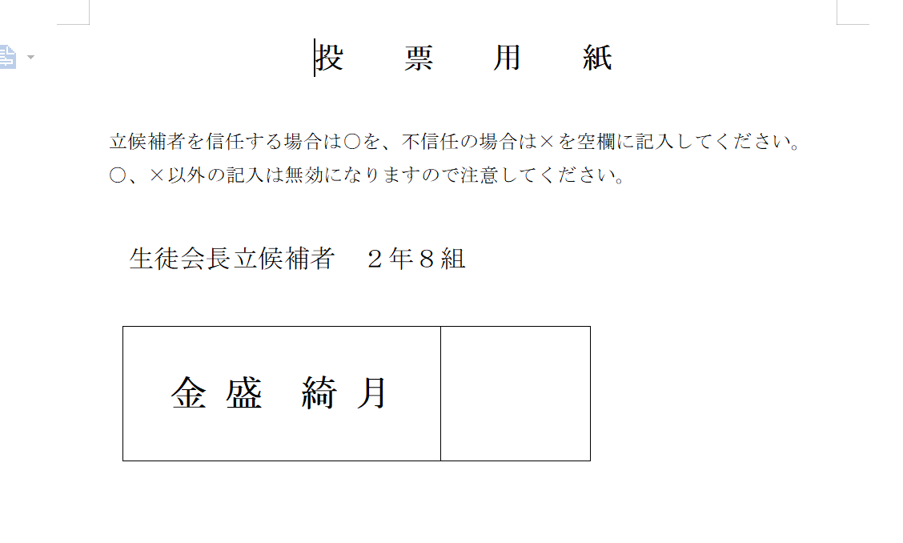
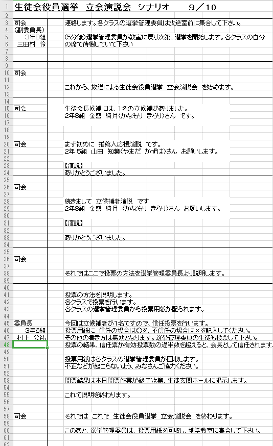
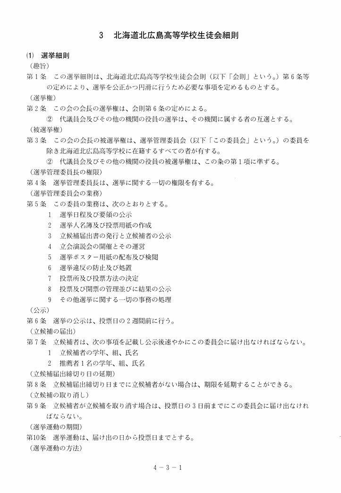
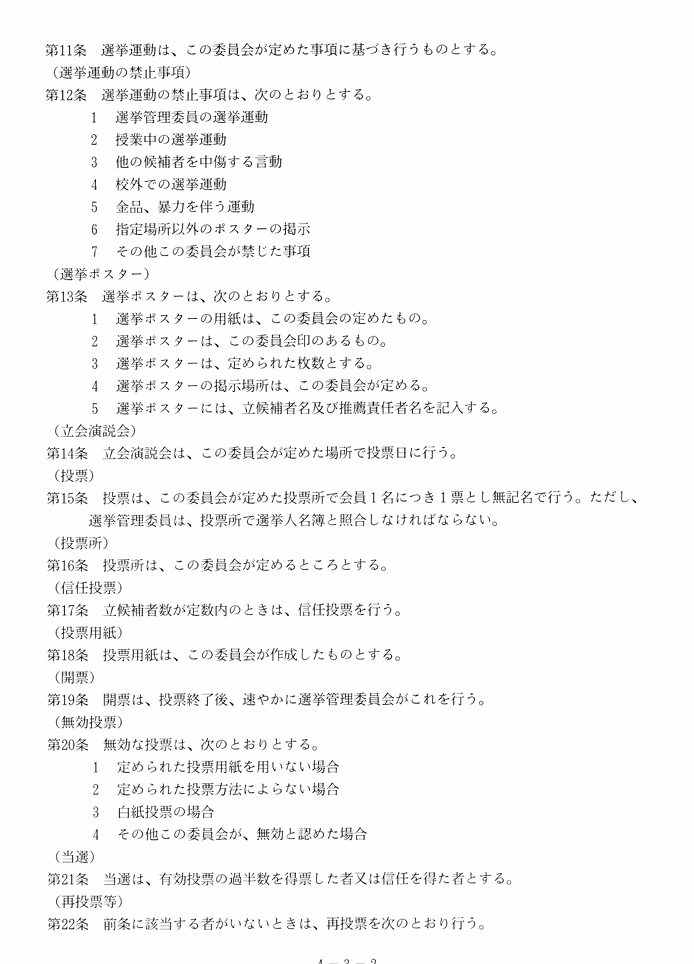
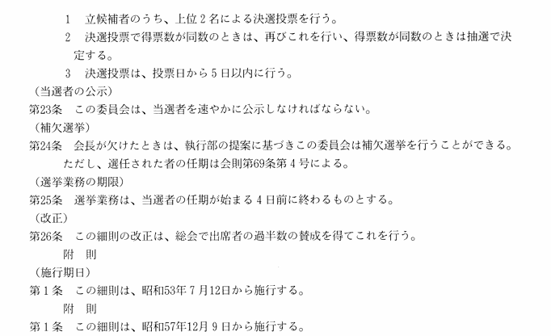

開催日:9月頭
開催場所：本校
担当:書記長
準備期間:2~3週間
立候補者が２人以上いる場合は決選投票を行いますが、立候補者が一人の場合は信任投票という形をとります。
また、生徒会内で立候補者が２人以上いる場合には全校で選挙を行わず、執行部内の投票という形をとる場合もあります。
しかし全校生徒の代表である生徒会長を決めることなので執行部内という内輪で決めることをよく思わない先生がいらっしゃることもありますので注意しましょう。
立候補は基本的に本校の１，２年生であればだれでもできます。もちろん執行部以外の一般生徒が立候補することも可能です。
しかし、生徒会の仕事をあまり経験していない１年生が会長になることは控えたほうがいいでしょう。
全校生徒を対象とした信任投票の選挙では比較的準備が簡単です。
公示（会長選挙をやりますという通達）の際に、募集をかけます。告示（誰が会長選挙に出るかを通達）の際には、1人の名前だけになります。
その後の立会演説会で立候補者と推薦者の2人が演説を行います。
立候補者が1人しかいない場合は基本的に前任の生徒会長が推薦者となります。前会長を推薦者としない方法もありますが控えましょう。
ここでめんどくさいのは決選投票の形をとる全校での選挙を行う場合です。決め方としてはよいのですが、なにせ準備等があります。
まず公示で伝えた「会長1名」の定員を超えた場合、開示の際に立候補者を複数発表します。その際に今年度の生徒会長選挙は決選投票を行います、と伝える必要があります。
ここから準備が必要なのですが、各立候補者と推薦者に演説原稿を準備してもらいます。そして、開示後から選挙活動が許可されます。
挨拶運動や街頭演説、ビラ配り等が行われます。両候補の活動に不平等が起きないように書記長や前会長はしっかりと準備しましょう。
いざ、立会演説会になると第2体育館で全校生徒の前で演説をしてもらいます。まずは両候補の推薦者の応援演説からです。
それが終わったら、同じ順番で立候補者の演説を行います。演説が終わったら全校生徒を各HR教室に帰し、各クラスの選挙管理員会指示のもと投票作業に移ります。その日の放課後に各クラスの選挙管理員を召集し、開票作業を行います。
開票は顧問の先生立ち合いのもとしっか行いましょう。開票が終わったらエクセルで投票数と決着を印刷し、翌朝に生徒玄関前ホールにホワイトボード掲示しましょう。クラス連絡棚にも同じものを配布しましょう。
○選挙管理委員会
信任投票であっても、決選投票だとしても選挙管理委員会はお仕事があります。
(i). 信任投票
立会演説会が終わり次第、各教室で投票用紙を配布し投票の仕方について説明します。信任の場合は○、不信任の場合は×を記入します。
これ以外のことがかかれていたり、何も書かれていなかった場合は無効票となります。選挙管理委員にも投票権はあります。
投票が終わり次第、委員生徒は被服室に回収した投票用紙を持っていき開票作業に移ります。※帰りのSHRは公欠をもらいましょう。
(ii). 決選投票
仕事内容は信任投票時とさほど変わりません。応援演説会が終了次第、各教室で投票用紙に記入してもらいます。
この時に違うのは、自分が投票したい候補の名前の下に○を記入してもらいます。
両方不信任の場合はなにも記入しないで提出です。その後の動きは信任投票の際と変わりません。
○執行部の動き（日付は46期のものです）
・夏休みが明け1週間後くらいに告示を行います。おそらく定期テスト終わりくらい。
・告示の際に選挙管理委員会を招集し、告示用紙の配布/立候補受付の説明/選挙管理委員長・副委員長・学年チーフの選出を行います。
（委員長は総括と投票方法の説明、副委員長は議事進行、学年チーフは年次の集計）
・告示から1週間後くらいに開示を行います。開示後は選挙活動を行います。
・開示の際にも選挙管理委員会の召集を行います。この時に今年度の選挙の形を説明します。信任投票なのか、決選で行うのかです。
・選挙活動で何を行うのかをしっかりと把握しましょう。各候補が好き勝手に街頭演説やビラ配りをしないようにしましょう。
・候補者がSNS等で選挙に関して何もしないようしっかりと注意しましょう。
（先生の監視の目が届かないため、SNSを利用した選挙公報活動はこれまで許可されていません。時代が変わるとあるかも？なので交渉の余地はあります。）
以下に生徒会会則の選挙に関する箇所を張るので、目を通しましょう。
・演説の原稿は特に字数制限があるわけではありません。信任投票の際には500文字以下くらいが目安でしょう。
決選投票の際には候補者の話し合いにはなりますが
①事前に演説内容を互いに確認する。（中身全てを確認しないにしても中身が被っていないか）
②お互い相手の演説は知らない状態で行う。（この場合も書記長や前会長は中身の精査のために確認しましょう。）
47期の会長選挙では②の方法を取り、文字数は1500～2000程度でした。参考までにこのくらいの文字数だと演説がしやすいと思います。
・立会演説会では事前に選出した選挙管理委員長、執行部からは書記長、さらに放送局の協力で議事進行を行います。
シナリオ作成が必要であることに加え、運営側と立候補者、推薦者を全員召集したリハーサルを前日には行いましょう。
・開票作業が終わった後翌朝に掲示するまでは、結果は基本的に秘密にしましょう。
どうせ翌朝にみんな見るのでいいだろ的な感じです。
生徒会長選挙に落選した執行部が生徒会を辞める！のは控えましょう
資料
参考までにいくつか過去の資料を載せておきます。
投票用紙
シナリオ
生徒会会則の選挙に関する規則
  